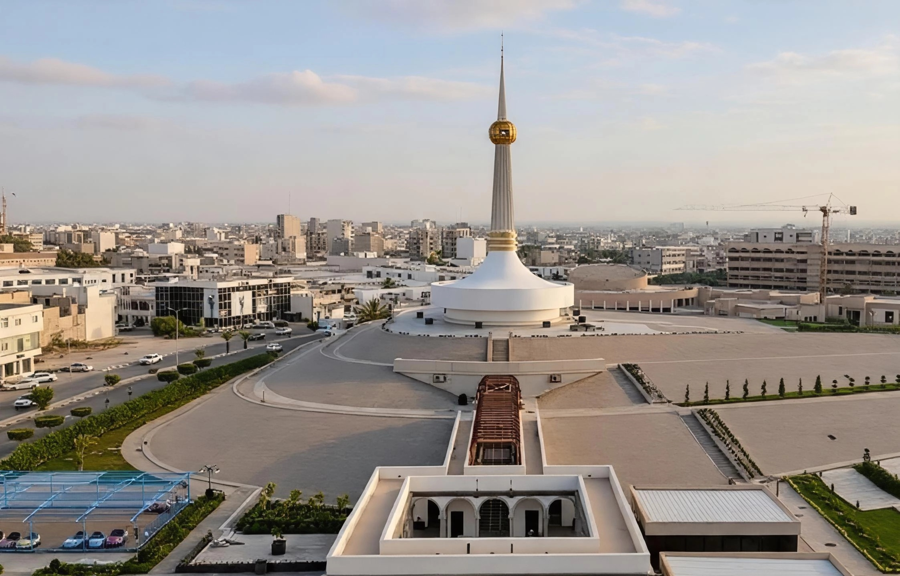

Discover Libya's main cities and the unique cultural and tourist attractions they offer.
Where the Sahara meets the Mediterranean
Libya's Mediterranean second city
The Pearl of the Desert
A Roman city on the Mediterranean shore
Gateway to the Akakus and the deep Sahara

Libya's commercial and maritime capital
A Berber stronghold in the Nafusa Mountains
Bride of the Desert
The heart of Libya's Green Mountain
Between the Green Mountain and the sea
A historic harbour on Libya's eastern frontier
A city of scholarship and coastal heritage
Libya's Amazigh coastal town